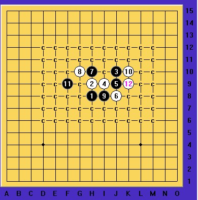

与群内棋友的一局棋
#1 与群内棋友的一局棋 作者：一剑寒霜 发表时间：2012-5-18 18:54:10
今天刚下的一盘棋，并不是什么质量局，高手请忽略，只是觉得对新手们有些可用的地方，发出来供大家评论，俺也从中学习。
疏星开局
到12手为止在定式范围内，没啥好说的。13手下的比较随意，直接点在I9，其实是把外围让给了白棋，很容易被白棋包饺子。因为是和对手第一次下棋，并不清楚其实力，但是感觉这里走弱一招还不至于立马陷入死地，也趁机看看对手的棋路。白14手没有按照我预想的在右上角做棋占地盘，而是走在了H9，与12、8、4形成了一个八卦防，此防守太过保守且局限于局部，14手之后白棋在左侧并没有进攻手段，于是我暗中窃喜，抢占右上角有力地形，黑15落在L10，一是相阻隔住白棋4、6手的扩展，二是想通过之后的做棋与1、13手，3手和5手能有联系。如果把黑15落在11线或12线上感觉太远，7、8、9线上又感觉太低打不开局面。白16如果换成我的话会选择K11，将黑棋在右上角的活动空间进行压缩。但对方在长考后将16手落在G7点，大概是计算到利用16、8的活三或者跳三有一系列的反攻手段。在粗略的目算了一下白棋在左边的进攻后，感觉没有杀，于是继续扩大黑棋在右上的优势，17手落在K11准备进攻。
白棋18后，突然我发现之前的计算不够全面，白棋貌似有很大优势，如果黑防守G9，那么白棋可以走J5可以利用跳三结合眠三做很多东西，如果黑防守G5，那么白棋在左上基本已是必杀之势。但因为此时对对手有了个大致的估计，所以觉得对方应该杀不出，于是果断防守G5，将左上让给对手进攻，等待对手的失误。对手显然也不是省油的灯，明显已经看到一套杀，20、22、24一气呵成，顿时俺的心里凉了一截 ，不过俺临危不乱，不轻言放弃，心想着这局势，1、13、17不能浪费了，细看一下果然有救，25手H10黑棋VCF反。
，不过俺临危不乱，不轻言放弃，心想着这局势，1、13、17不能浪费了，细看一下果然有救，25手H10黑棋VCF反。
之后白长考后悔棋，但个人觉得如不悔棋防住黑的VCF的话也是有一定机会的，黑棋想赢也不是很容易，悔棋后24防守J10显然无力回天，这时候就是考验黑棋对棋型的掌握了，17、15很容易联想到花月进攻棋型，活三后黑走27，白棋认输。
PS：其实白棋在22手是错过一个杀，22如果不冲四而是在D10做杀那么黑棋就会因为缺少G9上的棋子形不成VCF反。另外白20在E9做棋也可以必胜。
在PS：通过这局棋只想讲几点，1、在下棋的时候摸索对手的行棋思路，判断对手与自己的水平高下，在某种意义上有利于自己布置战术。
2、在一些局面下不要轻易下手和认输，比如一开始白棋24之后看似必胜，其实联系全盘就发现黑棋能够利用VCF防住。
3、平时学习定式，要注意对一些棋型的掌握和灵活运用。尤其是花谱、云雨月这些定式
4、自己在算杀时一定要仔细考虑，落子顺序，落子多少等，该冲的冲，不该冲的别冲。比如白棋22手冲四帮助黑棋制造了防守的机会，而如果采取做棋做杀，则可以达到必胜，将棋子的效率发挥到最大。
没怎么做过棋评，外加此局棋漏洞颇多，只是觉得稍有代表性，便拿出来写写
［ 有志青年 于 2012-5-18 20:39:57 时奖励此帖[金币加 100 威望加1］
［ 逆刃 于 2012-5-18 21:06:22 时花20金币送鲜花一朵］
［ 聊城蓝剑 于 2012-5-19 6:14:00 时花20金币送鲜花一朵］
［ 錦貝 于 2012-5-21 20:13:34 时花20金币送鲜花一朵］
#2 Re:与群内棋友的一局棋 作者：山城刀客 发表时间：2012-5-18 21:29:46
楼主这局棋下得不错，很精彩！
不过这个11是必败的，发个小地毯供大家交流。

 疏星必败11地毯.rar
疏星必败11地毯.rar
［ 一剑寒霜 于 2012-5-18 22:44:42 时花20金币送鲜花一朵］
#3 Re:与群内棋友的一局棋 作者：专业被虐 发表时间：2012-5-18 21:35:16
谢谢2楼贡献
#4 Re:山城刀客【==Re:与群内棋友的一局棋==】 作者：一剑寒霜 发表时间：2012-5-18 22:45:15
原来都被终结了，哈哈，还真不知道，学习了